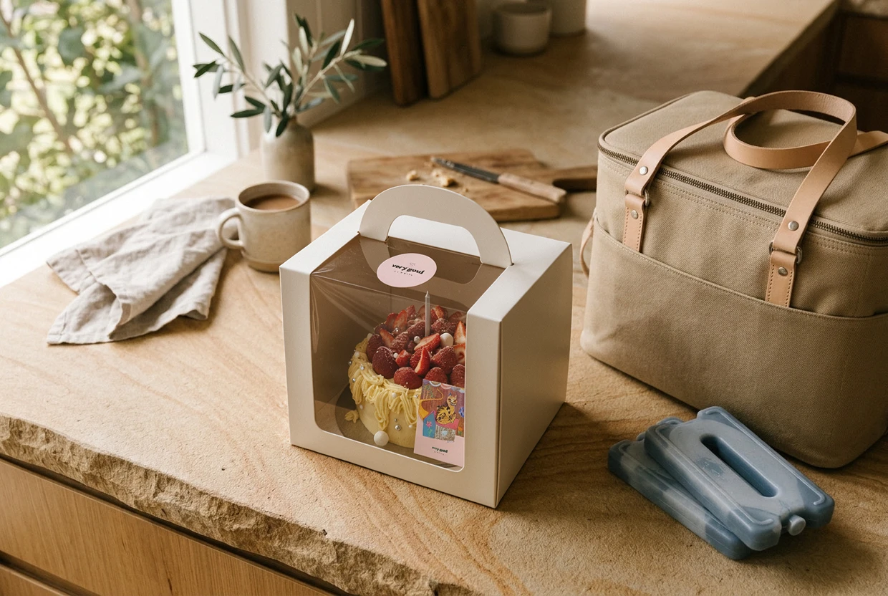

VERYGOOD JOURNAL · CELEBRATION CARE & FOOD SAFETY
Keep it cold when required, keep it level, and plan the handover.
Getting a cake to a celebration involves two separate jobs: protecting its shape and keeping it safe to eat. Warm buttercream can soften, while potentially hazardous food needs appropriate temperature control during transport.[7][10] A tidy finish is not a substitute for checking food temperature.[7]
Start with the cake you are actually collecting, rather than a general rule about how long cakes can travel.

Plan the trip around the cake’s care instructions. (Illustrative transport preparation example; an insulated container is equipment, not a guarantee of food temperature.[7])
Ask the baker for its storage and transport instructions, the box dimensions and any handling requirements. Check that the venue has suitable fridge space if refrigeration is needed; a fridge that cannot fit the box is not a finished plan.[10]
For potentially hazardous foods, cold transport means keeping the food at 5°C or colder.[7] That does not mean every cake has identical refrigeration needs: confirm the requirements for your particular cake, including its filling and finish.[7][10]
Tell the baker about the journey and what will happen afterwards. Include any wait before the venue opens, not just the driving time. If you cannot maintain the required conditions, change the arrangements before collecting it.
BEFORE YOU COLLECT · 3 ESSENTIAL QUESTIONS
Confirm the filling and finish requirements with the baker. Potentially hazardous foods require cold transport at 5°C or colder.[7][10]
Ask for the exact box dimensions (width, depth, and height) and check that a cleared shelf is ready at the venue.[10]
Count the whole timeline—including any waiting time before the venue opens—not just time spent driving.
For a cake requiring cold transport, organise an appropriate insulated container with ice bricks or other temperature-controlled equipment.[7] Put already chilled food into the container and keep it closed until transfer to suitable storage.[8]
An insulated bag and ice packs are equipment, not a guarantee of the cake’s actual temperature: FSANZ also advises checking food temperature with a clean, sanitised thermometer.[7] Ask the baker how temperature can be checked appropriately for the packaged cake.
Cool the passenger cabin before loading, but do not treat air-conditioning alone as a cold chain. FSANZ favours the air-conditioned interior over the boot for cold food; the requirement still concerns the food’s temperature, not how comfortable the car feels.[7][8]
Keep the cake covered and the food-carrying area clean.[7][8] Pack it last and travel directly, without adding shopping stops.[8]
FSANZ FOOD SAFETY NOTE · EQUIPMENT VS. ACTUAL TEMPERATURE
Car air-conditioning cools the cabin, not the core of a boxed cake, and an insulated bag is only as effective as its pre-chilled setup. Load already-chilled food last, keep the insulated container closed, and travel directly to your destination without side errands.[7][8]
Arrange a clear, flat position in the cooled passenger cabin before collection. Darvella Patisserie recommends a level, non-slip surface for cake boxes and carrying the box from underneath.[9]
Avoid a sloping seat or someone’s lap: professional cake guidance identifies both as unstable places for a cake.[10] A non-slip surface helps with movement, but does not replace suitable transport arrangements for a heavy or tiered cake. Ask the baker about those arrangements rather than improvising.
Keep other luggage from pressing against the box, and do not stack items on it.[9][10] Support its base when carrying it and keep it level.[9] Leave enough time to drive carefully without rushing.
WHERE TO PUT THE BOX · IN-CAR POSITION COMPARISON
RECOMMENDED · LEVEL & COOLED
Place on a flat, cleared passenger footwell with a non-slip mat in the air-conditioned cabin, away from luggage.[7][8][9]
AVOID · TILT & MOVEMENT
Angled seat cushions and natural body movement on someone’s lap are identified as unstable places for a cake box.[10]
Physical handling guidance for standard boxed cakes; does not replace temperature-controlled equipment when cold transport is required.[7][9][10]
Confirm who will receive the cake, where it will be stored and who needs its care instructions. For food requiring temperature-controlled storage, FSANZ recommends unloading it and transferring it to that equipment as the first job at the venue.[8]
Do not let arrival turn into an unplanned display period. Agree on presentation and serving arrangements with the baker and venue, especially if the celebration is outdoors. There is no single journey time in this guide that makes every cake safe.
Before leaving, check three things: the cake’s instructions, the cooling arrangement and the receiving fridge. A little coordination belongs in the celebration plan too.
QUICK DEPARTURE CHECKLIST · 3 THINGS TO CONFIRM
Confirm storage temperature, box dimensions, and handling notes for your specific cake with the baker.[7][10]
VERYGOOD CHOCOLATE · SYDNEY CELEBRATION CAKES
Contact us about your occasion and ask for the care instructions for the cake you are considering.
[7] FSANZ — Transporting food safely (https://www.foodstandards.gov.au/business/food-safety/transporting-food-safely)
[8] FSANZ — Transporting food (https://www.foodstandards.gov.au/business/charities/transporting)
[9] Darvella Patisserie — Pastel Mosaic: Cake Care (https://darvellapatisserie.com/products/splatter)
[10] Amycakes Bakes — How to Transport a Wedding Cake (https://amycakesbakes.com/how-to-transport-a-wedding-cake)